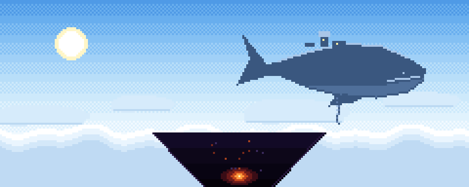

BETWEEN THE SKY AND THE ABYSS 別案 C（索引）Alt C (index)
天と淵のあいだ
空を泳ぐ巨神の背に乗り、世界の底の謎へ。建築も採掘も、いつものままに。Climb onto titans that swim through sky, sea, storm and earth. Build and mine as you always do.

天Sky
四体の巨神が、空・海・嵐・地の中を行きます。背に乗れば、そこが試練の場です。Four titans move through sky, sea, storm and earth. Climb aboard and the back is your trial ground.
淵Abyss
体の中の試練、心臓、そのさらに奥に何かがあります。眠りについた巨神の下で、旅は続きます。Trials inside the body, the heart, and something deeper still. The journey continues beneath the sleeping titans.
案内Contents
01
巨神と背中Titans四体の巨神と背中の試練Four titans and their trials
02スキルとビルドSkills36 の技、天職、刻印36 skills, callings, runes
03装備Gear13 種の武器と共鳴の炉13 weapons and the forge
04旅嚢と道具Pouch専用の持ち物A dedicated inventory
05パーティとマルチParty6 人までUp to six
06遊び方How to play最初の 1 時間と操作First hour and controls
07導入・FAQInstall / FAQ必要なものと入れ方Requirements and install